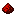
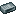

机械动力
机械动力是一门利用风或水等自然力量使物体旋转或移动的技艺。
实际上，许多设备可以接入机械动力网络，以实现自动化运动，或为其他功能提供动力。
要开始利用机械动力，你首先需要一个动力来源。
风车是一种利用风力的方式。只要有足够的空间，它们几乎可以在任何地方建造。
水车是一种略强的动力来源，因为它们利用河流中的水流。
风车
风车是一种利用风力旋转传动杆的方式。它们体积庞大，需要一块 13 x 13 x 1 的完全无遮挡区域才能放置。要建造一座风车，你首先需要一根传动杆，然后需要一片或多片风车叶片。


风车叶片可以用布制作。一个风车最多可以有五片叶片，叶片越多，旋转速度越快。
要建造风车，首先以任意水平方向放置一根传动杆。然后，用右键在传动杆上添加最多五片风车叶片，即可建成风车。它会慢慢开始旋转。
如果传动杆已连接到其他动力源，或者空间不够空旷，风车可能会损坏。
多方块结构: tfc:windmill
水车
水车是一种利用河流中水流力量产生动力的方式。如果放置得当，它们可以达到一些极快的旋转速度。
水车需要一块 5 x 5 x 1 的空间来放置。注意，如果周围区域有任何障碍物，水车可能会损坏。


或者如果传动杆已经连接到其他动力源。
水车可以简单地用木材制作。
要放置水车，只需将其连接到任意传动杆的末端。传动杆应位于流动水源（即河流）上方一格或两格处。
传动杆高度以下的水，如果是流动的，会使水车加速。其他任何位置的水，或传动杆下方的静止水，都会阻碍水车运动，使其减速或停止。
多方块结构: tfc:water_wheel
一个水车
传动杆


4
传动杆是旋转网络的基础，是将旋转动力从一个位置传输到另一个位置的方块。它们可以连接长达五个方块，但再长就会断裂！
封闭式传动杆
4
传动杆也可以制作成封闭式的。它们可以单独放置，也可以放在现有传动杆上方。
然而，要传输更远的距离，你需要一个齿轮箱。
齿轮箱

2
齿轮箱是一种通过使用齿轮来改变旋转动力方向的装置。它们也用于连接长距离的传动杆链而不会断裂。
要使用齿轮箱，必须配置其侧面。手持锤右键点击齿轮箱的任意面，可以启用/禁用该面的输入/输出。潜行时用锤点击齿轮箱，则会切换其相对的面。
注意，由于其内部结构，齿轮箱只能同时启用两个不同旋转轴上的面。
离合器

2
离合器是一种通过红石控制旋转网络的方式。它是一个封闭式传动杆，被充能时会断开连接，只有未充能时才允许旋转通过。
多方块结构
一个使用中的离合器示例。
手推磨自动化
一个可以连接到机械网络的设备是手推磨，只需在其上方放置一根竖直方向的传动杆即可。连接后，手推磨不能手动转动，而是会随着上方传动杆的旋转自动研磨物品。
上方传动杆旋转得越快，手推磨研磨得也越快。
多方块结构: tfc:rotating_quern
一个连接到传动杆的手推磨。
杵锤
另一种机械设备是杵锤。杵锤会在砧上自动进行锻造。杵锤需要一根带刃传动杆才能工作。带刃传动杆的工作原理与普通传动杆相同，但上面有一个用来激活锤子的叶片。




多方块结构
一个杵锤的装置。
在传动杆下方放置杵锤，然后用右键将锤子添加到其上。锤子必须是金属锤。确保杵锤的朝向正确，使带刃传动杆能向下推动锤柄。然后锤子会敲击放置在它前方的砧。杵锤总是记录“轻击”动作，并且总是使指针向目标靠近。如果锭不够热或砧的等级不正确，会发出沉闷的金属撞击声提醒你。